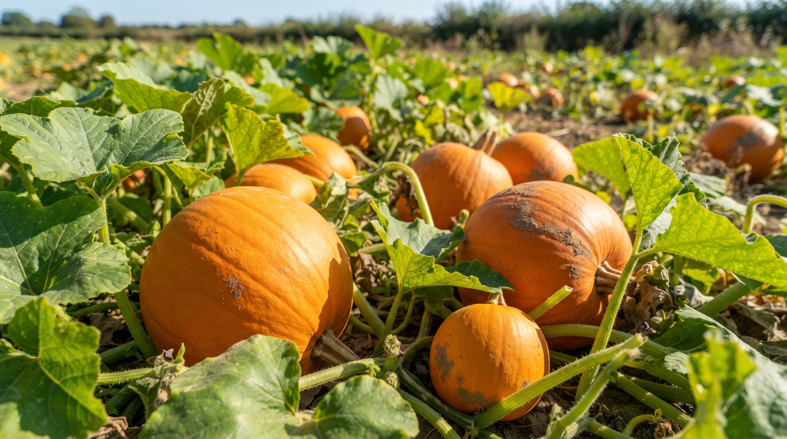
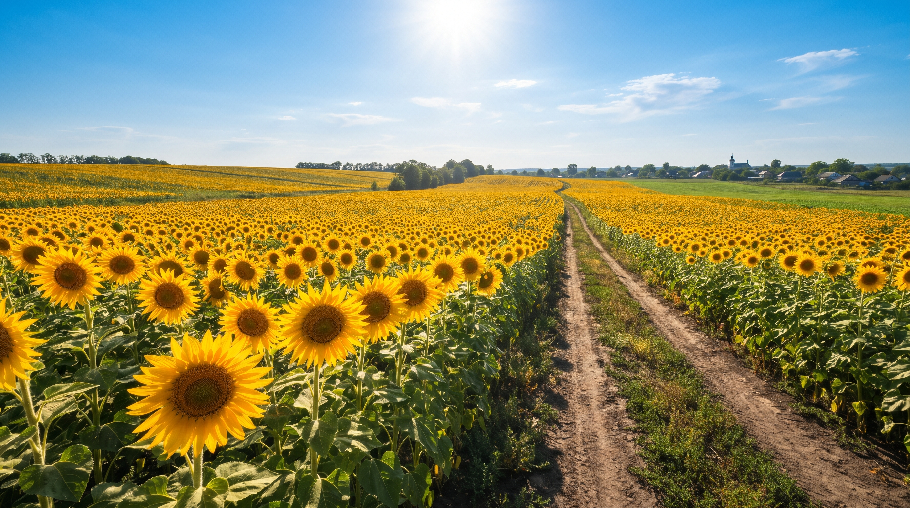
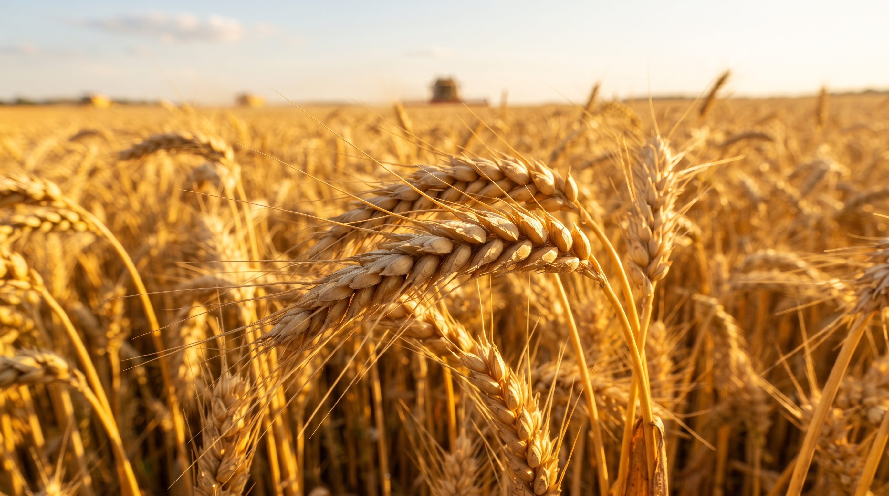
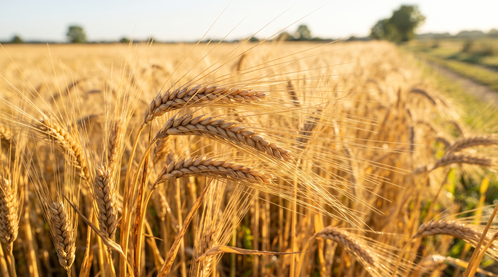

База культур и нормы

Тыква на семечку (сорт Ольга и др.)
Норма высева: 4–5 кг/га (схема 70×70 или 140×70 см).
Урожайность: 700–1100 кг сухой семечки с 1 га.
Нюанс: Критически важна своевременная сушка после комбайна, чтобы семечка не потемнела.

Подсолнечник
Норма высева: 55–65 тыс. семян/га (около 4–6 кг/га).
Урожайность: 20–32 ц/га.
Нюанс: Возвращать на то же поле не раньше чем через 6–7 лет из-за заразихи и болезней.

Озимая пшеница
Норма высева: 180–220 кг/га.
Урожайность: 40–60 ц/га.
Нюанс: Отличный предшественник для бахчевых и пропашных культур, хорошо очищает поле от сорняков.

Яровой ячмень
Норма высева: 160–200 кг/га.
Урожайность: 30–45 ц/га.
Нюанс: Короткий период вегетации, ранняя уборка позволяет успеть провести зяблевую вспашку или культивацию.
Агро-калькуляторы и стресс-тест
💰 Рентабельность + «А что, если…»
🌾 Расход семян и топлива (ГСМ)
Подготовка техники и агрегатов
Отмеченные пункты сохраняются и повышают общий процент готовности к сезону в шапке сайта.
Трактор и мини-трактор
- Замена моторного масла и фильтров перед сезоном
- Проверка уровня масла в гидравлике и КПП
- Протяжка колесных болтов и проверка давления в шинах
- Шприцевание крестовин, рулевых тяг и навески
Культиватор и почвообработка
- Проверка износа стрельчатых лап и стоек
- Выставление рамы по горизонту на ровной площадке
- Смазка подшипников опорных колес и катков
Прицеп и логистика урожая
- Проверка ступичных подшипников и тормозной системы
- Герметичность бортов (особенно для мелкого зерна и семечки)
- Исправность светотехники и страховочных цепей
Бюджетные тракторы и комплектующие
Ременные минитракторы (12–18 л.с.)
Плюсы: Низкая цена входа, простая конструкция, доступные расходники и малый расход топлива.
Минусы: Меньший ресурс при тяжелой вспашке и частой работе с прицепом.
На что смотреть при покупке: Люфты в рулевом, состояние ремней и шкивов, подтеки масла на КПП и двигателе.
Компактные полноприводные/заднеприводные минитракторы (20–24 л.с.)
Плюсы: Полноценная гидравлика, ВОМ, удобнее работать с культиватором, фрезой и прицепом на нескольких гектарах.
Минусы: Выше стоимость самой машины и узлов трансмиссии/гидравлики.
На что смотреть при покупке: Работа гидрораспределителя под нагрузкой, состояние сцепления и шлицов ВОМ.
Малобюджетные и кастомные минитракторы
Плюсы: Гибкая сборка под конкретные задачи (культивация, перевозка, междурядная обработка) за минимальные деньги.
Минусы: Требуют времени на доводку, сварку, подбор передаточных чисел и самостоятельный ремонт.
На что смотреть при покупке: Прочность рамы и точек крепления навески, соосность валов и цепных/ременных передач.
Ключевые комплектующие и запчасти в запасе
Ремни, цепи, шкивы и сцепление
Запчасти: Клиновые ремни профиля B/SPB, приводные цепи, натяжные ролики, диски/выжимные сцепления.
Совет: Держите запасной ремень и замок/звенья цепи в ящике с инструментом — обрыв в поле не остановит работу надолго.
Гидрошланги, распределитель и тяги навески
Запчасти: РВД (рукава высокого давления), медные/алюминиевые уплотнительные кольца, пальцы, шплинты, центральный винт.
Совет: Проверяйте шланги на трещины и потертости об острые кромки рамы.
Фильтры, подшипники, крестовины и резина
Запчасти: Масляные, топливные и воздушные фильтры, ступичные/опорные подшипники, крестовины кардана, камеры и покрышки.
Совет: Записывайте маркировку всех фильтров и подшипников в агро-журнал, чтобы заказывать без замеров в магазине.
Нажми «Крутить идею», чтобы получить нишевую связку
Генератор подкидывает реальные идеи для малых и средних хозяйств, переработки и заработка на технике.
Проекты, кейсы и стена опыта
Добавить проект, кейс или урок из практики
Журнал работ и расходов
Записи сохраняются в памяти вашего браузера.